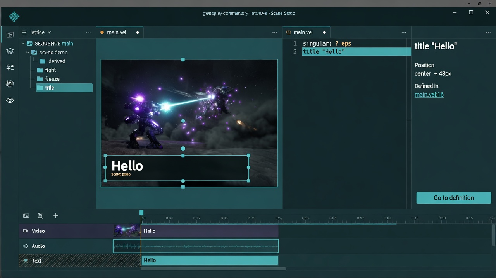
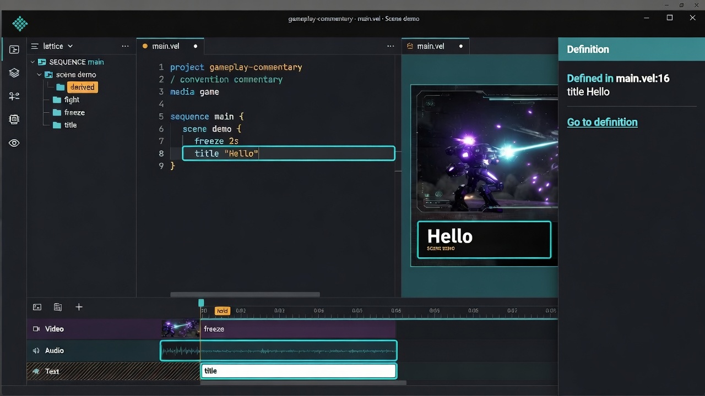
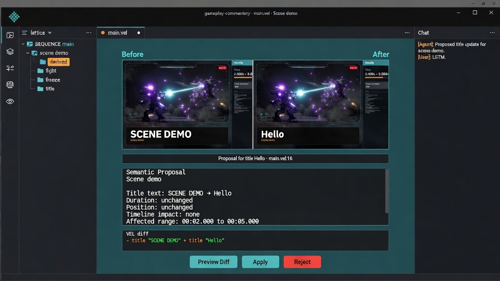

Manipulate
見えているものを直接触る
選ぶ。動かす。日常はこれで終わっていい。

VEL から Canvas へ辿ることもある。
Canvas を動かして終わることもある。
main.vel:16 · 全ビューで保存される指差し
Agent 提案から Review して、
そこから定義へ飛ぶこともある。
選ぶ。動かす。日常はこれで終わっていい。

Canvas ↔ VEL、timeline ↔ source、proposal ↔ affected locus。Go to definition はその一例。

Agent も同じ locus を指す。Apply するまで現行は変わらない。
